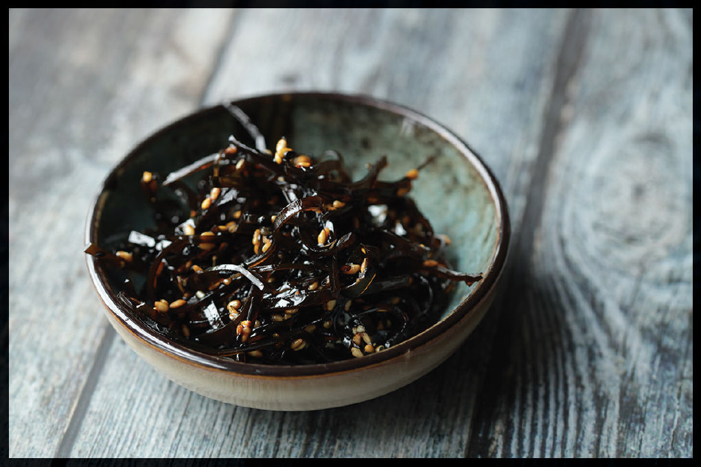

TSUKUDANI FROM SPENT KOMBU
|
Yield Makes about ½ cup |
Active Time 15 minutes Total Time 25 minutes or longer, depending on the kombu |
You can use just kombu or a mix of kombu and niboshi (if you made dashi with niboshi). Don’t worry if a bit of stray katsuobushi makes its way into the pot.
INGREDIENTS
Kombu left over from 1 batch of dashi
Niboshi left over from 1 batch of dashi (optional)
2 tablespoons (30 ml) light soy sauce or shoyu
2 tablespoons (30 ml) sake
2 tablespoons (30 ml) mirin
1 teaspoon (4 g) sugar
Water
1 teaspoon (3 g) toasted white or black sesame seeds

Tsukudani is a dish named after the small island city of Tsukadajima, which is now the Chūō ward in present-day Tokyo. It’s a side dish that’s served as an accompaniment to rice, made by simmering seaweed or fish in soy sauce and mirin. The high salt content of the soy sauce and sugar content of the mirin is further concentrated as the liquid reduces into a sticky glaze, which effectively preserves the seafood. It’s been a popular side dish in Japan since the seventeenth-century Edo period.
It hits all three of the major Japanese flavors: salty, sweet, and umami. Because it’s so intense, a little goes a long way. My grandmother kept various flavors of tsukudani in her fridge at all times, pulling out a pinch with a pair of chopsticks to put on top of her hot rice. A few teaspoons of the stuff is enough to season a full serving of rice.
DIRECTIONS
1 Cut the spent kombu into 1½-inch strips, then cut those strips cross-wise as thin as you can to form short, floppy matchsticks.
2 Combine the kombu, niboshi (if using), soy sauce, sake, mirin, sugar, and enough water to cover in a wok or skillet and stir until the sugar is dissolved. Cook over low heat, stirring occasionally with chopsticks, until the liquid has completely reduced and the mixture is thick and syrupy, 15 to 20 minutes. Taste a piece of kombu. It should be very tender. If it is still firm or tastes chalky or raw in the center, add another ½ cup (120 ml) of water, stir, and let it reduce again. Repeat until the kombu is tender.
3 Stir in the sesame seeds. Transfer the mixture to a sealable container, let it cool completely, then store in the fridge. Use straight from the fridge to top bowls of rice. Store in the fridge for several months or up to a year.